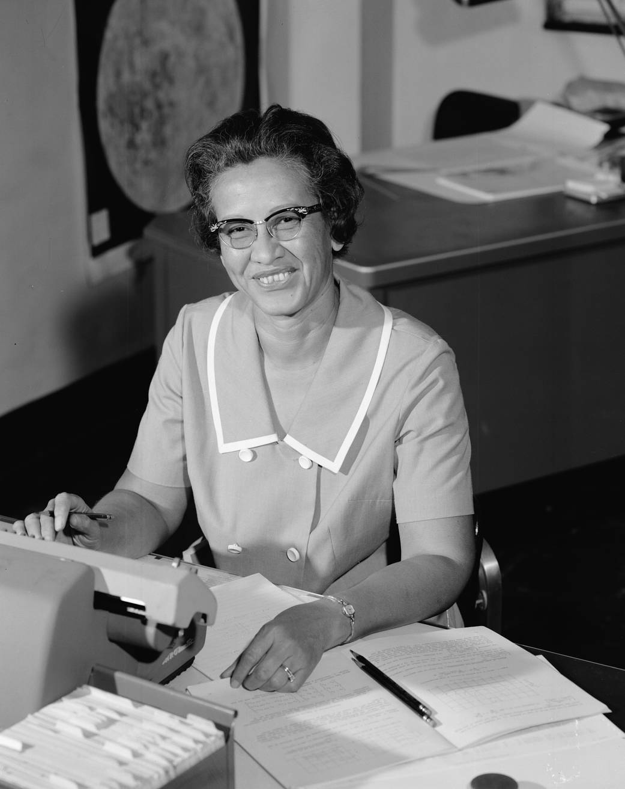

Freedom 7
Katherine ajudou a calcular a trajetória da missão de Alan Shepard, em 1961. Foi o primeiro voo espacial tripulado dos Estados Unidos.
UMA PESSOA NEGRA IMPORTANTE NA TECNOLOGIA
Katherine Johnson foi uma matemática negra que ajudou a NASA a calcular trajetórias de missões espaciais. Seu trabalho foi essencial para que astronautas viajassem com mais segurança.
ler a história ↓
Katherine Coleman Goble Johnson nasceu em 26 de agosto de 1918, em White Sulphur Springs, no estado da Virgínia Ocidental, nos Estados Unidos. Ela cresceu em uma família que valorizava muito a educação.
Desde pequena, Katherine gostava de números. Ela contava pratos, degraus e tudo o que encontrava pela frente. Na época, muitas escolas para estudantes negros não ofereciam ensino além do oitavo ano. Por isso, seu pai precisou enviar os filhos para outra cidade durante o período escolar.
Aos 15 anos, Katherine entrou na West Virginia State College. Ela estudou Matemática e Francês e se formou com destaque em 1937. Foi uma das primeiras pessoas negras escolhidas para fazer pós-graduação na West Virginia University, mas acabou deixando o curso para cuidar da família.
Antes de trabalhar com o programa espacial, Katherine foi professora em escolas para estudantes negros. Em 1952, soube que o laboratório de pesquisa Langley, ligado ao governo dos Estados Unidos, estava contratando mulheres negras para fazer cálculos matemáticos.
Em 1953, ela começou a trabalhar no laboratório. Naquele período, as pessoas que faziam cálculos complexos eram chamadas de “computadores”. Katherine fazia parte de uma equipe conhecida como West Area Computing, formada por mulheres negras que analisavam dados de aviões e foguetes.
Ela fazia contas com lápis, papel, réguas de cálculo e muita atenção. Depois, os cálculos passaram a envolver computadores eletrônicos, mas Katherine continuou conferindo os resultados para ter certeza de que as máquinas não tinham cometido erros.
Katherine ajudou a calcular a trajetória da missão de Alan Shepard, em 1961. Foi o primeiro voo espacial tripulado dos Estados Unidos.
Em 1962, John Glenn pediu que Katherine conferisse manualmente os números produzidos pelo computador antes de sua viagem orbital.
Ela também participou de cálculos importantes para o programa Apollo, que levou astronautas até a Lua em 1969.
Katherine nasce na Virgínia Ocidental e cresce em uma família que incentiva seus estudos.
Conclui a faculdade com formação em Matemática e Francês.
Começa a trabalhar no laboratório Langley, fazendo cálculos para pesquisas aeronáuticas.
Confere os cálculos da missão de John Glenn antes do lançamento da Friendship 7.
Contribui para o trabalho matemático ligado ao programa Apollo e à chegada à Lua.
Morre aos 101 anos, deixando uma história lembrada pela NASA e por estudantes de todo o mundo.
Uma viagem espacial não depende apenas de coragem. É preciso calcular velocidade, distância, gravidade, posição da nave e o momento exato para mudar de direção. Um pequeno erro poderia fazer uma nave sair da rota.
Katherine transformava essas perguntas em números. Ela ajudava a descobrir por onde a nave deveria passar, quando deveria acelerar e como poderia voltar para a Terra. Seu trabalho juntava Matemática, Física, tecnologia e colaboração.
Além da importância científica, sua presença também foi muito significativa. Katherine era uma mulher negra trabalhando em um ambiente em que mulheres e pessoas negras enfrentavam preconceito e tinham menos oportunidades. Mesmo assim, ela conquistou a confiança de seus colegas por causa de sua competência.
algumas curiosidades
Mulheres matemáticas faziam os cálculos manualmente. Katherine foi uma das pessoas que mostrou como esse trabalho era importante.
Ela gostava de fazer perguntas e não aceitava simplesmente uma resposta sem entender como ela tinha sido encontrada. Essa curiosidade ajudou a melhorar os cálculos e também inspirou outras pessoas.
Em 2015, recebeu a Medalha Presidencial da Liberdade, uma das maiores homenagens civis dos Estados Unidos. Sua história também foi apresentada no filme Estrelas Além do Tempo.
Katherine mostrou que a tecnologia não é feita apenas por máquinas. Ela também depende de pessoas que pensam, perguntam, conferem informações e trabalham em equipe.
Sua história incentiva meninas e meninos negros a se interessarem por Matemática, Ciência, Engenharia, Computação e Inteligência Artificial. Ela prova que conhecimento pode abrir caminhos mesmo quando a sociedade tenta limitar as oportunidades.
Hoje, seu nome está presente em escolas, projetos educacionais, livros e espaços de pesquisa. Em 2016, a NASA inaugurou o Katherine G. Johnson Computational Research Facility em homenagem à cientista.
Este site foi feito para a aula de Tecnologia e Informação por:
Pessoa escolhida: Katherine Johnson
Escolhemos Katherine porque sua história mistura Matemática, tecnologia, exploração espacial e representatividade.
As informações desta página foram conferidas em fontes institucionais sobre a vida e o trabalho de Katherine Johnson.
NASA · biografiaNASA ScienceSmithsonianNational Women's Hall of Fame